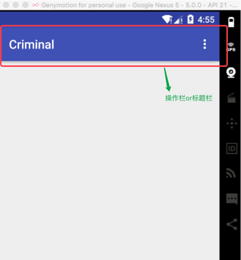
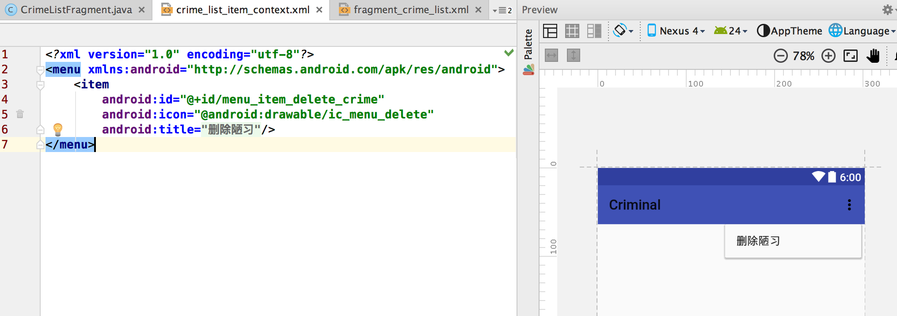
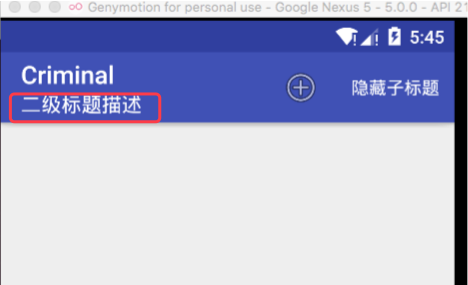
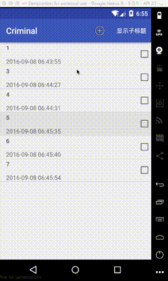
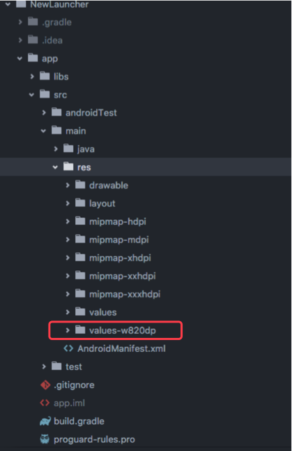

这本书属于入门, 有很多内容可以当做扩展来了解一些API, 并且有的时候可以适当的利用Google提供好的API来做一些高效开发节约时间成本. 原理东西本书偏少. 不过可以学习本书中的代码的编写风格, 书中代码都是采用MVC模型来编写的. 就写这么多, 下面开始整理一些小知识点.
Activity的生命周期
有7种分别为: 除去onRestart()比较特殊一点的生命周期. 可以把activity认为分别在3种状态切换, 分别是运行, 暂停, 停止.
配置文件改变导致Activity重建,如屏幕旋转
设备配置(device configuration)是用来描述设备当前状态的一系列特征. 这些特征包括屏幕的方向, 手机语言, 屏幕的密度, 屏幕的尺寸, 键盘类型, 底座模式等
在开发中有时候需要为了匹配不同的设备配置, 我们会提供多套副本文件. 比如说:
- 图片放在不同的
dpi密度的文件夹下; - 适应手机的横竖屏创建不同的文件夹并编写不同展示风格的xml布局放入.
- 创建不同语言的
strings文件. 来实现语言国际化 - …..
这里列举一下创建水平模式下加载另一个布局文件, 在res/资源文件夹下创建一个layout-land目录, 创建一个与layout文件夹中布局文件名称相同的xml. 然后编写想在横屏时候需要显示的布局.
其实当手机处于横屏的时候需要加载资源文件. 这个时候系统首先查找开发者是否创建对应横屏的文件夹就是layout-land,如果有. 那么继续查找资源ID所对应的文件是否存在. 如果存在那么就加载这个文件. 如果没有就从layout文件夹中加载默认的文件(layout文件夹优先级基本上是最低的)
异常重建时Activity的数据保存
由于本地手机的配置文件的改变, 如屏幕旋转造成了Activity的重建. 这个时候就会导致已经实例对象或者属性赋值全部丢失.
利用onSaveInstanceState(Bundle)一般会在onPause()之后被调用. 把要存储的数据添加到onSaveInstanceState()的参数类型为Bundle的参数中. 然后当销毁后的重建时, 会在onCreate()方法中会传回一个Bundle类型的对象. 可以取出. 如果不是异常销毁重建那么默认情况下onCreate()回调方法带回的Bundle类型的参数是为null的.
SDK版本小解和兼容处理
- SDK最低版本: 当应用安装的时候, 手机会检测如果本身系统等级如果低于应用指定的最低版本那么应用无法安装.
- SDK目标版本 应用是设计给哪个API级别去运行的. 大多数情况下, 目标版本即最新发步的Android版本.
- SDK编译版本
Compile. 前两个是通知手机设备的. 而这个属性是告知Android Studio编译器使用哪一个SDK版本进行代码编译.
有时候我们可能会使用高版本的API. 但是有可能手机的版本会低于这个API的出现版本. 这个时候就需要在代码中进行逻辑判断分支.
Build.VERSION.SDK_INT:代表了当前运行的Android手机的版本号.
通过判断当前手机的版本号, 这样就可以针对不同的场景进行分支处理.
XML布局属性
样式,主题, 主题属性
**样式(style)**是xml资源文件, 含有用来描述组件行为和外观的属性定义的集合. 例如在res/valus/styles.xml中声明如下样式.
<style name="BigTextStyle" > |
在以后的所有大的文字控件textView,button.都可以直接引入一个style属性. 当重复的属性越多, 使用的控件也越多, 这种好处是不言而喻的.
主题(theme)
Android自带了一些供应使用的预定义平台主题. 例如: android:theme="@style/Theme.AppCompat.Light".
引用主题属性:
<TextView |
例如这样后, 你会发现textView会带有margin,字体颜色,加粗等一些属性. 这就在一些场合很方便的设置了一些属性. 并且也能达到我们看着不那么丑的需求.
dp, sp
dp (density-independent):一般用于设置控件宽高和margin,padding. dp值代表的实际长度与手机的屏幕分辨率和屏幕尺寸没有直接关系,但是有间接关系. 是这样. 根据屏幕的分辨率和屏幕尺寸会得到一个屏幕的像素密度. 根据这个屏幕像素密度来决定1dp在当前设备代表着几个像素点.sp (scale-independent pixel):. 主要用于字体. 和dp相似会根据手机的密度来动态的选择对应的大小. 但是有一点不同. 这种像素会受手机字体的偏好设置而改变
布局参数
对于资源文件xml中标签的属性android:layout_width,android:layout_margin,android:text等等, 为什么有的属性前面有layout开头, 而有的没有呢.
其实名称以layout_来头的属性是作用于组件的父组件. 我们将这些属性统称为布局参数. 它们会告知父布局如何在内部安排自己的子元素.
而不以layout_开头的属性是作用于组件的. 组件生成时, 会调用某个方法按照属性即属性值进行自我配置.
外边距于内边距
根据上面的结论, 应该就可以看出layout_margin,padding这两个属性. 一个是作用父布局一个是作用在自己身上的. 所以在自定义ViewGroup的时候不仅要获取子孩子的宽高还要获取margin这样才能正确的布局. 而在自定义View的时候我们往往要兼顾到padding这个属性. 不然设置padding的属性就会无效果.
ViewPager简单介绍
ViewPager在某种程度上有点类似于AdapterView(ListView的超类). AdapterView需借助于Adapter才能提供视图. 所以同样的ViewPager也需要PagerAdapter的支持.
ViewPager可能开发中用的很多. 在使用ViewPager作为一个fragment容器的时候. FragmentManager要求其容器视图必须具备id属性. 所以如果是代码中动态的创建ViewPager.那么别忘了设置id属性, 如下:
protected void onCreate( Bundle savedInstanceState) { |
这样就可以实现动态添加ViewPager并作为Fragment的容器了.
由于直接通过PagerAdapter派生出子类有很多场景步骤过于复杂. 我们可以根据具体作用场景来选择其子类来作为ViewPager的适配器.比如说FragmentStatePagerAdapter
实现很简单如下: 复写两个方法就可以
// 在fragment中的onCreate()中直接设置就可以 |
可以看到当创建了FragmentStatePagerAdapter(..)传入了一个FragmentManager给其构造方法. 因为实际上FragmentStatePagerAdapter是我们的代理, 负责管理与ViewPager的对话并协同工作.代理需首先将getItem()方法返回的Fragment添加到Activity. 然后才能使用fragment完成自己的工作. 这也是需要传递fm的原因.
如果需要监听ViewPager的滑动事件
给ViewPager设置setOnPageChangeListener()注册一个回调监听, 里面有三个状态回调:
onPageScrollStateChange: 告知当前页面所处的行为是什么.onPageScrolled: 告知当前显示的页面是哪个, 并且现在已经滑动导致的偏移距离是多少.onPageSelected: 告知页面滑向了哪里.可以得知是在数据集合中的第几个Pager被显示出来了
关于FragmentStatePagerAdapter与FragmentPagerAdapter
主要区别就是: 二者在卸载不再需要的fragment时,所采用的处理方式有所不同
FragmentStatePagerAdapter: 会销毁不需要的fragment. 事务提交后, 可将fragment从activity#FragmentManager中彻底移除. 而类名中的state表明: 在销毁Fragment时, 他会将其onSaveInstanceState()方法中的bundle信息保存下来. 当用户切换回来的时候, 保存实例状态可用于恢复生成新的fragmentFragmentPagerAdapter: 对于不再需要的fragment, 其对应的FragmentManager则选择调用事务的detach(Fragment)方法. 而非remove(Fragment)方法. 也就是说,FragmentPagerAdapter只是销毁了fragment的视图, 但仍将fragment实例保留在FragmentManager中
而如何取决需要按场景来使用: FragmentStatePagerAdapter更节省内存. 如果需要展示的数据很多,如果使用FragmentPageAdapter那么会保存大量的信息, 并且占用很多空间就不是很合适.
所以如果用户界面只需要少量固定的fragment. 那么使用FragmentPagerAdapter比较合适. 否则就反之使用FragmentStatePagerAdapter.
资源文件的配置与匹配
先看一下以下项目结构目录截图:

有三个value文件夹, 第一个为我们的默认加载的value, 第二个为使用了横屏修饰符修饰声明, 第三个使用了指定语言修饰符声明. 里面都有一个strings文件夹看一下内容. 这里只拿app_name属性来说明测试, 三个文件都有此属性.

具有不同的修饰符的同种功能的文件夹是具有不同优先级的. 还是以上面的图片为例子. 如果说在首页Activity引用了app_name这个字符串. 那么根据不同的场景会去加载不同的资源文件.
- 如果本地语言指定了中文: 那么就会加载
values-zh文件中的资源(此文件夹的配置修饰符优先级在上面的三种场景最高). - 如果本地语言非中文, 并且是横屏状态下: 那么会加载
values-land文件中的资源 - 如果即没有指定为中文,也不是横屏状态下, 那么就加载默认的资源文件
values文件夹
可以看出来app加载资源文件的时候是按照一定优先级去加载的, 首先会先排除掉不兼容当前设备配置的资源目录. 如果有多个文件匹配那么高优先级的文件夹首先会检查当前手机环境对应的配置是否匹配(比如是否横屏,是否设置某种本地语言). 匹配成功之后就会加载对应的文件夹下的内容. 而低优先级的对应功能的文件夹不会再去加载. 但是如果发现匹配不成功或者成功之后没有找到对应的属性那么还会继续往低优先级的查找. 直到找到为止.
所以可以看出一个属性值,最少要保证在资源文件中存在一份. 否则会出现加载错误, 并且需要处理好场景之间无值可选的问题.
下面列出大部分具有配置修饰符的设备特征. 他们的优先级从高到低排列的
| 优先级(数值越低越高) | 特征说明 |
|---|---|
| 1 | 移动国家码, 通常附有移动网络码 |
| 2 | 语言代码, 通常附有地区代码 |
| 3 | 布局方向 |
| 4 | 最小宽度 |
| 5 | 可用宽度 |
| 6 | 可用高度 |
| 7 | 屏幕尺寸 |
| 8 | 屏幕纵横比 |
| 9 | 屏幕方位 |
| 10 | UI模式 |
| 11 | 夜间模式 |
| 12 | 屏幕显示密度 |
| 13 | 触摸屏类型 |
| 14 | 键盘可用性 |
| 15 | 首选输入法 |
| 16 | 导航键可用性 |
| 17 | 非文本导航方法 |
| 18 | API级别 |
资源文件夹也可以使用多重配置修饰符, 例如values-zh-land, 各修饰符必须按照优先级高低排序.否则无效. 例如values-land-zh就是无效的目录. 这里就不细说. 可在官网guide/topics/resources/providing-resources查看.
资源命名
资源的文件只能有小写字母组成并且不能包含空格.
无论是在XML中还是在代码中引入资源, 引用都不包括文件的扩展名. 所以在同级目录下不能以文件的扩展名作为依据来区分命名相同的文件. 也不允许同级下名称相同扩展名不同的文件存在,在编译时候会报错
布局文件命名
最好按文件名排序的声明文件名. 通常以其定义的视图类型名为前缀. 如activity_,dialog_,list_item_.这样查找分类就容易多了.
资源目录结构
所有的资源都应该保存在res/目录的子目录下, 常见的子目录有drawable/,mipmap/,layout/,values/,raw/, menu/等.
Android会无视res/目录下的其他子目录.
操作栏
也可以认为是title bar. 说法很多. 如下

可显示在操作栏上的菜单被称作选项菜单, 选项菜单类似于popupWind.可以作为用户的扩展操作.
1.首先在XML文件中定义选项菜单
res/menu/目录下创建一个xml. 根标签为<menu>如下

或者你可以这样

showAsAction属性用于指定菜单选项是显示在操作栏上, 还是隐藏到溢出菜单中. 比如上图中的app:showAsAction="ifRoom|withText"是一个组合属性. 代表着只要操作栏可用的控件足够,菜单项图标和文字描述都会显示在操作栏中. 这个属性值不设定的情况下默认是溢出菜单模式显示的. 如果空间仅够显示图片那么文字不会显示, 如果剩余空间即不够显示文字也不够显示图标, 那么菜单项会被转移隐藏到菜单中.- 上面这个属性值还有两个可设置项
always和never. 不推荐使用always, 应尽量使用更方便的ifRoom属性值, 让操作系统系统决定如何显示菜单项. 对于那些很少用到的菜单项, 使用never是个不错的选择. icon:属性使用了系统的图标资源. 这个资源只存在于设备上.
2. 菜单文件创建完之后,就该代码设置了
首先Activity提供了管理选项菜单的回调函数. 在需要选项菜单的时候, Android会调用其onCreateOptionsMenu()方法.
如果你使用的是Fragment那么也没关系因为Fragment也有同名的函数为你使用. 接下来以在Fragment为例说明.
复写onCreateOptionsMenu()函数. 通过inflate进行填充布局到menu对象中. 如下
|
然后在Fragment#onCreate()方法中添加一段代码 setHasOptionsMenu(true);
说明: Fragment#onCreateOptionsMenu()方法是由FragmentManager负责调用的. 因此当activity接收到来自操作系统的onCreateOptionsMenu()方法回调请求时, 我们需要明确的告诉FragmentManager需接收选项菜单的方法回调.就是setHasOptionsMenu().
现在我们的选项菜单就已经可以显示出来.
3. 响应菜单选项选择的事件
既然添加了扩展功能的选项, 那么必定需要实现某些点击事件. 通过复写onOptionsItemSelected()来进行处理. 有于我们可能在menu.xml中声明了多个item. 为了区分点击的是哪一个. 可以通过id来识别不同的点击触发. 如下
|
你可能看到上面有一行注释写的设置操作栏的子标题这个的效果如下图.

4. 层级式导航,向左后退箭头
虽然大多数都是自定义的titlebar, 但是对于系统的默认后退也应该了解.
通过Activity#getSupportActionBar().setDisplayHomeAsUpEnable(). (通过测试发现当在二级界面的时候默认都会出现向左的后退箭头但是默认的是没有处理的, 需要在onOptionsItemSelected()做对应的处理,我这里测试的环境为sdk为24,使用的AppCompatActivity派生的子类)
所以如果是fragment开发为基础, 那么别忘了setHasOptionsMenu(true), 允许FragmentManager对自己的fragment队列进行菜单选项的事件分发回调. 如下:
|
还有一个问题!
Android编程, 有时候你以为已经丝入扣, 天衣无缝, 可以高枕无忧的时候上线, 总是会被人提醒到好像还有一个问题!
上面的二级标题是否还记得. 有这么一个场景如果二级标题显示了, 但是发生了设备旋转! ok 那么重建后你会发现二级标题不存在了. 这时就可以使用setRetaionInstance(true)来保存成员属性. 并利用一个布尔值来控制在创建菜单选项的时候二级标题是否需要显示.
Android的文件系统与Java I/O
在操作系统级别, Android运行在Linux内核之中, 因此,它的文件系统类似于其他一些Linux或Unix系统. 目录名称已正斜杠/分隔. 文件名可由各类字符组成, 且区分大小写. 受益于Linux的安全模式, 应用都是以特定的用户ID运行的.
Android利用应用的java包名, 来决定应用在文件系统中的存放位置. 用于发布与安装, 应用本身被打包成APK文件格式. 被放置在/data/app目录. 当然这是需要进行root权限才可以的.
访问文件和目录
应用访问文件和目录最便捷的方式是使用Content类提供的方法. Content类是所有关键应用组件的超类.
下面是Content提供的基本文件或目录的便捷方法
| 方法 | 使用目的 |
|---|---|
| File getFilesDir() | 获取data/data/<packname>/files目录 |
| FileInputStream openFileInput(String name) | 打开data/data/<packname>/files/目录下的name文件名的文件获得输入流 |
| FileOutputStream openFileOutput(String name, int mode) | 同上, 这个是获得输出流, 不同之处如果没有这个文件那就会自动创建 |
| File getDir(String name, int mode) | 获取data/data/<packname>/name名称的文件夹目录(没有就会先创建) |
| String[] fileList() | 获取data/data/<packname>/files目录下的所有文件名称列表. |
| File getCacheDir() | 获取data/data/<packname>/cache目录 |
系统的多选模式
如下效果:

开始实现步骤:
1. 首先定义多选菜单的资源文件
例如上面的垃圾桶图标需要手动去设置, 在res/menu/目录下创建一个xml
<?xml version="1.0" encoding="utf-8"?> |
同样使用系统的资源图片, 就是右上角的垃圾桶.
2. 实现Content菜单(进入编辑模式)
这里面有两种,在旧版本11之前上编辑模式是单项操作模式, 后续版本是多选模式, 下面简单说一下旧版本的模式然后在回到上面图中的多选模式, 可以直接跳过直接看多选模式, 毕竟11版本已经很旧了
于之前的操作栏里面的步骤大致相同. 这里复写的方法是有两个(fragment类中)
onCreateContextMenu(...): 实例化一个Content多选菜单onContextItemSelected(...): 响应菜单选择按钮
这里还是以在fragment中的代码举例.
|
最后一步为ContextMenu登记一个ListView如下
// 在低版本使用浮动上下文菜单 |
回到多选模式, 还是多选好
接着第二大步开始. 如果要想实现多选模式的ContextMenu. 那么需要设置列表视图的选择模式为ListView.CHOICE_MODE_MULTIPLE_MODAL, 然后并添加个监听响应即可,其实很简单.
lv_main.setChoiceMode(ListView.CHOICE_MODE_MULTIPLE_MODAL); |
3. 最后一步
这个最后一步是针对多选模式下的, 上面两步已经在逻辑功能上完成了之前的需求, 但是有一点, 当进入多选的时候点击或不点击发现没有区别, 我们无法得知哪一个item是否已经被点击激活状态, 哪一个没有没点击激活. 所有我们需要给Item添加一个背景, 设置一下item的激活或者非激活的背景色, 代码如下:
// 在drawable/文件夹下创建一个文件 |
把这个StateListDrawable状态drawable设置到ListView的item背景属性上.
ok 关于多选的ContentMenu操作就实现完成.
扩展一下:
这里实现的方法可以完全作用在ListView和GridView中(GridView和ListView都是AdapterView的子类). 但是如果不是这两个类型的控件应该如何实现这种多选方式.
- 首先给一个控件实现长按监听
- 在长按回调中调用
Activity.startActivityMode(..)并创建一个ActionMode.Callback的接口作为参数传入. 这个接口里面的回调很熟悉就是上面ListView设置了setMultiChoiceModeListener里面创建的匿名类里面对应的回调.
设备屏幕尺寸的确定
你可能会发现你的项目目录中存在如下这个文件, 但具体什么意思却不是很清楚

这是在Android 3.2之后引入的新修饰符, 在3.2之前是使用small, normal, large, xlarge来讲设备分为不同的屏幕大小类别.
现在新引入的屏幕尺寸修饰符如下表:
| 修饰符格式 | 描述 |
|---|---|
| wXXXdp | 有效宽度: 宽度大于或等于 XXX dp |
| hXXXdp | 有效高度: 高度大于或等于 XXX dp |
| swXXXdp | 最小宽度: 宽度或者高度(两者中最小的那个) 大于或等于 xxx dp |
如果要指定某一个布局仅适用于屏幕宽度至少300dp的设备, 这种情况下, 可以使用宽度修饰符, 并将布局文件放入res/layout-w300dp目录下, (w代表宽度width). 同样道理如果是高度那么使用hxxxdp
有时候设备方向变换, 也会导致设备的宽高发生变化. 为了确定某个具体的屏幕尺寸可是使用sw, 如果不管是横屏1280*720还是竖屏的720*1280, 其对应的sw的值都是800.
以命令行的方式运行activity
要用adb命令启动首先需要满足activity组件可以被外部启动. 需要在清单文件中配置要被启动的activity的属性如下
<activity android:name=".activity.CrimeCameraActivity" |
设置exported属性. 这个属性默认是false. 表示只能从自己的应用中启动. 如果将intent过滤器添加到activity的声明中, 那么该activity的exported将被自动设置为true
然后使用adb命令, 如果你没有设置全局环境那么就到Android SDK安装目录platform-tools子目录下执行adb命令.
adb shell am start -n 应用包名/.activity类名
/ 后面接的和清单文件中activity的name属性对应的是一样的. 如果你如上代码在多层包中. 那么实际上是这样的. 我的包名com.szysky.note.criminal
演示代码:
adb shell am start -n com.szysky.note.criminal/.activity.CrimeCameraActivity
am(Activity Manager)是一个在设备上运行的命令行程序. 它支持启动和停止Android组件(component)并从命令行发送intent. 可以运行adb shell am指令. 查看am工具能够完成的所有任务.